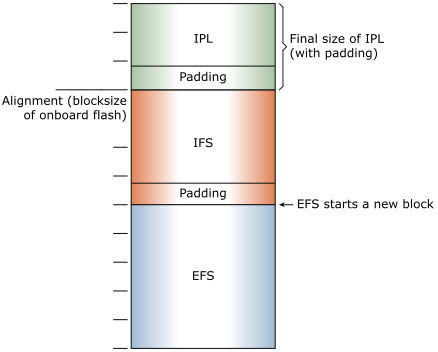

Combining the IPL, an OS image (IFS) created by mkifs, and a flash filesystem image
created by mkefs can be useful or even required.
- Some boards accept only a single image, so the OS image and any other other images must be
combined before they are transfered to the target board.
- A single image can simplify manufacturing of systems after they go into production. Copying a single
image is simpler, faster, and less susceptible to error than copying multiple images.
Figure 1. The IPL, OS image, and flash filesystem combined into a single image. Padding is used to
align the different image components with block sizes required by the board.

Combining the images
To enable configurations like the one above, you must create two separate images and combine them.
You can use the diskimage utility to create a single, combined image for a partitioned medium,
such as a hard drive, SD card, or MMC on your host, then transfer the image to your target (see the
diskimage reference and the
diskimage configuration file
section
in the Utilities Reference, and your BSP User's Guide).
The boot image filesystem will be run from RAM to improve performance, and the
eXecute In Place (XIP) image filesystem will be run from flash to conserve RAM.
Note:
- Each section of your combined image (IPL, IFS, EFS) must begin at a memory page boundary.
Typically, this is a 4 KB boundary; see the diagram above.
- The IPL code hands execution to the startup code and OS in the first image.
Instead of using
diskimage, you can use a hardware flash or EPROM programmer to burn
the separate images with appropriate alignment, or other utilities, such as:
Note: QNX recommends that you use
diskimage to combine images.
For another approach to mounting a secondary image filesystem, see the
Reloadable Image Filesystems technote.
Restrictions to using XIP
The following restrictions apply to XIP image filesystems:
- The board must support XIP.
- The IFS must be uncompressed and stored on linearly mapped media.
- The IFS may not reside in NOR flash where there is a flash filesystem driver running for that same
flash array (because the flash driver will occasionally put the flash in a mode where it can't be
read as data).